EuCW - DET EUROPEISKA TELEGRAFIFÖRBUNDET
c/o E.C.M. of AGCW-DL

|
EuCW - DET EUROPEISKA TELEGRAFIFÖRBUNDET
|
|
Listans format (sorterad i alfabetisk ordning efter förkortningen
samma sorteringsordning som i ursprungslistan):
Klubbens förkortning och land
Klubbens riktiga namn
(Engelskt namn om det finns och skiljer sig från det riktiga namnet)
Översättning av namnet
klubbens kategori (en av
Vanlig CW klubb,
QRP-klubb,
E.C.M. anropssignal, namn
 AGCW-DL (Tyskland)
AGCW-DL (Tyskland)
Arbeitsgemeinschaft CW DL (Activity Group CW DL)
Vanlig CW klubb
ECM: DL1GBX, Martin

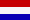
BQC (Nederländerna)Benelux QRP Club
QRP-klubb
ECM: PA9RZ, Robert
CFT (Belgien)
Club Francophone Télégraphiste
Fransktalande klubb
ECM/Pres: ON4LDL, Robert
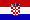
CTC (Kroatien)Croatian Telegraphy Club
Vanlig CW klubb
ECM/Pres.: 9A3FO, Mladen
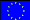
EHSC (Belgien)Radio Telegraphy Extremely High Speed Club
QRQ-klubb, minst hastigheten 300
ECM och sekreterare: DJ5CW, Fabian
 ESSEX (Storbritanien)
ESSEX (Storbritanien)
ESSEX CW-klubb
Vanlig CW klubb
ECM: G0IBN, Andrew
FISTS (Storbritanien)
FISTS CW Club - The International Morse Preservation
Society
Vanlig CW klubb
ECM: G3ZOD, Graham
FOC (Storbritanien)
First Class CW Operators Club
CW-klubb begränsad till 500 medlemmar
ECM: G4WQI, Dean
G-QRP (Storbritanien)
G-QRP Club - Devoted to Low Power Communication
(G-GRP-klubben - För lågeffektkommunikation)
QRP-klubb
ECM: M0KTZ, Enzo
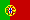
GPCW (Portugal)The Portuguese CW Group
ECM: CT1BQH, Carlos
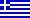
GTC (Grekland)
Greek Telegraphy Club
(Ελληνική
Λέσχη
Τηλεγράφηας)
Vanlig CW klubb
ECM: SV5DKL, Stathis
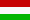
HACWG (Ungern)Hungarian CW Group
QRQ-klubb, minst hastigheten 150
ECM: HA3NU, László (Lacy)
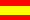
HCC (Spanien)Hispania CW Club
EA-anropssignal krävs för medlemsskap
HSC
(Tyskland)
Radio Telegraphy High Speed Club
QRQ-klubb, minst hastigheten 125
ECM+Secr: DL7AKC, Jens Sperling, John-Locke-Str. 18, D-12305
Berlin.
E-mail:...hsc (at-symbol) darc.de...
HTC (Schweiz)
Helvetia Telegraphy Group
Vanlig CW klubb
ECM: HB9DEO, Robert Zanini, Grütstr. 40, CH-8134 Adliswil (ZH),
E-mail:...hb9deo (at-symbol) uska.ch...
 INORC (Italien)
INORC (Italien)
Italian Naval "Old Rhythmers" Club
Flottist CW-klubb
ECM: I1QOD, Alberto Frattini, v. S. Domenico 69, I-17027 Pietra
Ligure (SV)
E-mail:...i1qod (at-symbol) inorc.it...
IS QRP (Italien)
Associazione Radioamatoriale Sardinia QRP Club
QRP-klubb
ECM: IS0VSU Franco Bachetti, V. Santa Rita 9, 09047 Selargius
(CA)
E-mail:...is0vsu (at-symbol) sardiniaqrp.com...
Club mail:...is-qrp (at-symbol) sardiniaqrp.com...
I-QRP (Italien)
Italian QRP Club
QRP-klubb
ECM: I3FFE, Franz Falanga, CP 20, I-31034 Cavaso (TV)
E-mail:...i3ffe (at-symbol) quipo.it...
ITC (Italien)
ARI Club Radiotelgrafisti (Italian Telegraphy Club)
Generic cw club
ECM: IN3VST, Vito Vetrano, Verdi 27/A, I-39012 Merano (BZ)
E-mail:...in3vst (at-symbol) tin.it...
LZCWC (Bulgarien)
LZ CW Club - Contest group
CW contest club
Contact: LZ2AU, Antoaneta Encheva, P.O.Box 189, Gorna Oryahovitza,
5100
E-mail1:...lz2au (at-symbol) qsl.net...
E-mail2:...lz1af (at-symbol) isasat.net...
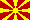
MCWG (Makedonien)Macedonian Telegraphic Group
QRQ club, min. speed 150
ECM: Z35M, Vladimir Kovaceski, Partizanskaja 65, 96330 Struga,
FYROM
E-mail:...Z35M_99 (at-symbol) yahoo.com...
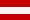
OE-CW-G (Österrike)OE-CW Group
Vanlig CW klubb
ECM: OE6FYG, Herbert Lafer, Speltenbach 55, A-8280 Fürstenfeld
OHTC (Finland)
OH Telegraphy Club
QRQ club, min. speed 150
ECM: OH6LBW, Janne Karresuo, Timonviita 3, SF-60150 Seinajoki,
E-mail:...janne.karresuo (at-symbol) kolumbus.fi...
OK-QRP (Tjeckien)
OK QRP Club
QRP-klubb
ECM: OK2BMA, Pavel Cunderla, Slunecna 4558, CZ-79005 Zlin
E-mail:...p.cunderla (at-symbol) sendme.cz...
RTC (Tyskland)
Radio Telegraphy Club e.V. - RTC
Vanlig CW klubb
ECM.: DL4CF, Jörg H. Vollbrecht, Steingasse 3, 06642 Reinsdorf,
E-mail...dl4cf (at-symbol) arrl.net...
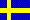
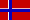
SCAG (Skandinavien)Scandinavian CW Activity Group
Nordic CW club
ECM: SM6DPF, Stig Hansen, Edsv. 1, 45054 Hedekas
Email...gunilla.carlander (at-symbol) swipnet.se...
SHSC (Belgien)
Radio Telegraphy Super High Speed Club
QRQ club, min. speed 250
ECM: vacant
 RU-QRP (Ryssland)
RU-QRP (Ryssland)
Russian Amateur Radio RU-QRP Club
QRP-klubb
ECM: RU2FM, Valentin Kovalchuk, Ul. Internatsional'naya 29 kv 39,
Kaliningrad , 236011
E-mail:...ru2fm (at-symbol) qsl.net
Club Email: club (at-symbol) qrp.ru
SPCWC (Polen)
SP-CW-C Polski Klub Telegrafistów (Polish Telegraphy
Club)
Vanlig CW klubb
ECM: SP2FAP, Sylwester Jarkiewicz, ul. Wielmozy 5 B, PL-82-337
Suchacz-Zamek,
E-mail:...qtc (at-symbol) post.pl...
UCWC
(O.S.S.)
UCWC Radiotelegrafnij klub korotkowolnowikow (The
International Morse Telegraphy Club UCWC)
Vanlig CW klubb
ECM: DJØMAQ, Czeslaw Grycz, Sigmaringer Str. 33, D-10713 Berlin
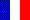
UFT (Frankrike)Union française des Télégraphistes
French language knowledges required
ECM: F6ENO, Alain Darve, 4 rue Kellermann, 51500
Rilly-la-Montagne,
E-mail:...f6eno (at-symbol) wanadoo.fr...
U-QRQ-C (O.S.S.)
The C.I.S. High Speed CW Club
QRQ club, min. speed 200
ECM: UT0FT, Vlad Grishchenko, Post Box 37, 270065 Odessa 65,
Ukraina,
E-mail:...ut0ft (at-symbol) iname.com...
VHSC (Nederländerna)
Radio Telegraphy Very High Speed Club
QRQ club, min. speed 200
ECM: PAØDIN, Din J. Hoogma, Schoutstraat 15, 6525 XR Nijmegen,
E-mail:...dingelom (at-symbol) hetnet.nl...
YL-CW-G (Tyskland)
YL-CW-Group
CW club for girls and ladies
ECM/Pres.: DF5ZV, Petra Pilgrim, Danziger Str. 10, D-35274
Kirchhain,
E-Mail: df5zv (at-symbol) darc.de...
3A-CWG (Monaco)
Groupe Monégasque de Télégraphie
Vanlig CW klubb
ECM: 3A2LF, Claude Passet, Palais Cynthia, 1 Blvd de Belgique,
MC-98000 Monaco
E-Mail:...cpasset (at-symbol) monaco377.com...
9A-CWG (Kroatien)
9A CW Group
QRQ club, min. speed 150
ECM: 9A2EU, Zlatko Maticic, Dobroniceva 19, HR-10000 Zagreb
E-Mail:...9A2EU (at-symbol) hamradio.hr...
Not 1: Telegrafihastigheten ges i tecken per minut.
Not 2:
Om du finner fel i denna lista, berätta det för mig.
Jag är också intresserad av EuCW-klubbars hemsidor som inte pekas
till från denna sida.
Skriv till: ... eucw (at-symbol) agcw.de...
Tack på förhand.
Not 3: Klubbar som är markerade med brädgård (#) är kandidat-klubbar. De kommer att godkännas om det inte finns några invändningar efter en given tidsperiod.